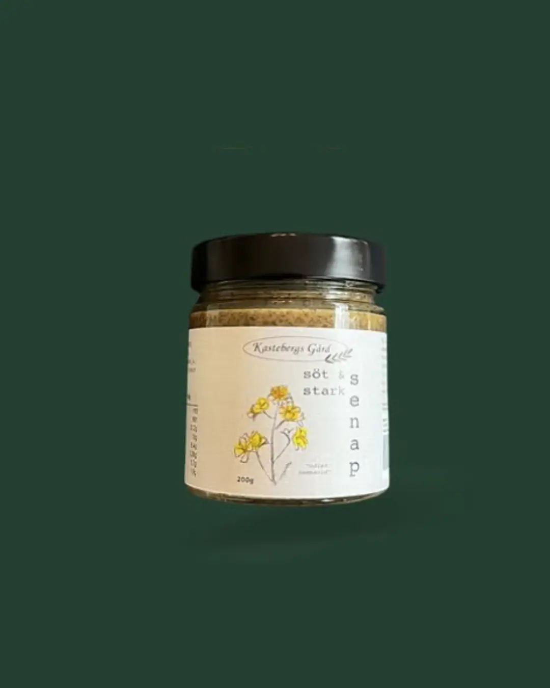

KASTEBERG SENAP

Nyhet200 gram otroligt god senap tillverkad med egenodlad raps från Kastebergs Gård.
Vikt:
200 gram
Producent:
Kastebergs Gård
Hållbarhet:
Lokal produktion
Pris:
89 kr
Om produkten
Förtjänst för förening: 20 kr
En mycket god sötstark senap, tillverkad med omsorg och kärlek hos Kasteberg. Varje burk bär spår av småländskt hantverk, egenodlade råvaror och en naturlig smakrikedom som endast kan komma från genuint gårdsarbete.
Varje burk innehåller 200 gram otroligt god senap tillverkad med egenodlad raps. Bakom produkten står Kastebergs Gård, som drivs av fyra generationer som med kärlek och omsorg värnar om djur, natur och en hållbar produktion. De tillverkar allt från senap till olika sorters rapsolja, alltid med naturen i största fokus.